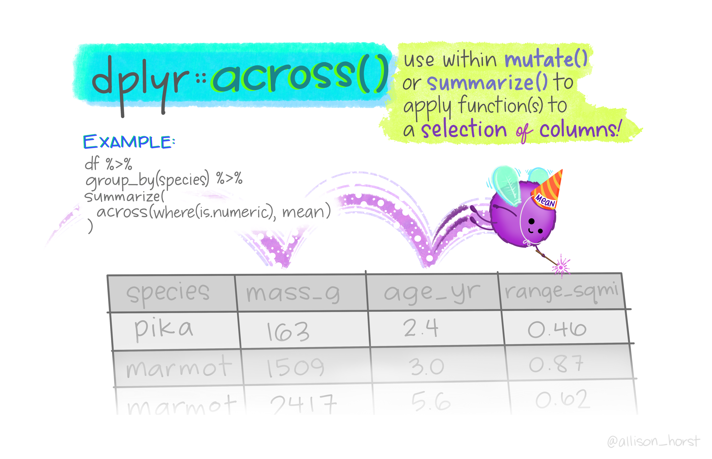

17 Summarizing Data
library(tidyverse) # Load tidyverse packages
library(palmerpenguins) # Load penguins dataOnce you have wrangled and subset your data, you may want to compute summary information about that data. There are several quick and flexible ways to do so!
17.1 Table and Count
R has many tools to create quick and easy summaries and descriptive statistics for your data. You saw previously how n_distinct() could be used to get the number of distinct values for a variable. If you instead want the number of times each of those unique values appear in the dataset, you can use table() (for a table output) or count() (for a dataframe output).
penguins %>%
pull(species) %>%
table()
#> .
#> Adelie Chinstrap Gentoo
#> 152 68 124
penguins %>%
count(species)
#> # A tibble: 3 × 2
#> species n
#> <fct> <int>
#> 1 Adelie 152
#> 2 Chinstrap 68
#> 3 Gentoo 12417.1.1 Proportions
If you wanted proportions instead of counts, there are several ways to get that and which method depends on the type of object you are working with (table vs df).
For tables, you simply add prop.table() to your pipe chain.
penguins %>%
pull(species) %>%
table() %>%
prop.table()
#> .
#> Adelie Chinstrap Gentoo
#> 0.4418605 0.1976744 0.3604651For dfs, you have to manually compute the proportions and add them as a new variable.
penguins %>%
count(species) %>%
mutate(proportion = n / length(penguins$species))
#> # A tibble: 3 × 3
#> species n proportion
#> <fct> <int> <dbl>
#> 1 Adelie 152 0.442
#> 2 Chinstrap 68 0.198
#> 3 Gentoo 124 0.360The mutate call here is manually computing the proportion for each unique value of species. n is a column name generated automatically by count(). This is taking the number of entries of each unique value and dividing by the total number of ALL entries (which is why the original dataframe’s species must be used in the length() call!).
When computing proportions, it’s always important you check to make sure you are doing things correctly. If so, they should sum to 1:
17.2 Summary
If you want a snapshot of your data, you can use summary() for a quick quantitative summary of each variable. summary() works on a number of different data objects in R. When applied to a dataframe, summary() will give you summary statistics on each variable. For categorical variables, it will give a count of each value. For continuous variables, it will give basic summary statistics.
summary(penguins)
#> species island bill_length_mm
#> Adelie :152 Biscoe :168 Min. :32.10
#> Chinstrap: 68 Dream :124 1st Qu.:39.23
#> Gentoo :124 Torgersen: 52 Median :44.45
#> Mean :43.92
#> 3rd Qu.:48.50
#> Max. :59.60
#> NAs :2
#> bill_depth_mm flipper_length_mm body_mass_g
#> Min. :13.10 Min. :172.0 Min. :2700
#> 1st Qu.:15.60 1st Qu.:190.0 1st Qu.:3550
#> Median :17.30 Median :197.0 Median :4050
#> Mean :17.15 Mean :200.9 Mean :4202
#> 3rd Qu.:18.70 3rd Qu.:213.0 3rd Qu.:4750
#> Max. :21.50 Max. :231.0 Max. :6300
#> NAs :2 NAs :2 NAs :2
#> sex year
#> female:165 Min. :2007
#> male :168 1st Qu.:2007
#> NAs : 11 Median :2008
#> Mean :2008
#> 3rd Qu.:2009
#> Max. :2009
#> 17.3 Summarize
summary() works, but is a little messy. You will likely want to be a little more specific with what you want. To get specific summaries of your data, use summarize() or summarise() (they are the equivalent, just depends on how you like to spell it). summarize() has a similar format to mutate(), in that you define new variables and how their values are computed. What summarize() does is return a new dataframe with one column for each name passed to it, and the value of that column will be the result of the R expression that name is equal to. Consider the example below that uses a subset of the penguins data:
penguins_example
#> # A tibble: 6 × 3
#> species mass flp_mm
#> <fct> <int> <int>
#> 1 Adelie 3750 181
#> 2 Adelie 3800 186
#> 3 Chinstrap 3500 192
#> 4 Chinstrap 3900 196
#> 5 Gentoo 4500 211
#> 6 Gentoo 5700 230
penguins_example %>%
summarize(flipper_m = mean(flp_mm),
mass_m = mean(mass),
ratio = mean(mass / flp_mm))
#> # A tibble: 1 × 3
#> flipper_m mass_m ratio
#> <dbl> <dbl> <dbl>
#> 1 199. 4192. 20.9
|
|
|
Above, the name of one column is flipper_m, and its value is the mean of the flp_mm variable. Likewise, the mass_m column is the mean of the mass variable. The third variable, ratio, is mean(mass / flp_mm). mass and flp_mm are vectors a quotient was computed for, so the quotient of the first value of each is found, then the second… ith, then the mean of that new set of numbers is taken. It should come as no surprise then that summary is designed to work with summary functions – those that output a single value.
To verify if that this is true:
17.4 Grouping Data
The power of summarize() comes from pairing it with group_by(). group_by() organizes your data into subgroups based on shared values. Compare the output of the following:
penguins %>%
glimpse()
#> Rows: 344
#> Columns: 8
#> $ species <fct> Adelie, Adelie, Adelie, Adelie, …
#> $ island <fct> Torgersen, Torgersen, Torgersen,…
#> $ bill_length_mm <dbl> 39.1, 39.5, 40.3, NA, 36.7, 39.3…
#> $ bill_depth_mm <dbl> 18.7, 17.4, 18.0, NA, 19.3, 20.6…
#> $ flipper_length_mm <int> 181, 186, 195, NA, 193, 190, 181…
#> $ body_mass_g <int> 3750, 3800, 3250, NA, 3450, 3650…
#> $ sex <fct> male, female, female, NA, female…
#> $ year <int> 2007, 2007, 2007, 2007, 2007, 20…
penguins %>%
class()
#> [1] "tbl_df" "tbl" "data.frame"
penguins %>%
group_by(species) %>%
glimpse()
#> Rows: 344
#> Columns: 8
#> Groups: species [3]
#> $ species <fct> Adelie, Adelie, Adelie, Adelie, …
#> $ island <fct> Torgersen, Torgersen, Torgersen,…
#> $ bill_length_mm <dbl> 39.1, 39.5, 40.3, NA, 36.7, 39.3…
#> $ bill_depth_mm <dbl> 18.7, 17.4, 18.0, NA, 19.3, 20.6…
#> $ flipper_length_mm <int> 181, 186, 195, NA, 193, 190, 181…
#> $ body_mass_g <int> 3750, 3800, 3250, NA, 3450, 3650…
#> $ sex <fct> male, female, female, NA, female…
#> $ year <int> 2007, 2007, 2007, 2007, 2007, 20…
penguins %>%
group_by(species) %>%
class()
#> [1] "grouped_df" "tbl_df" "tbl" "data.frame"There are two things to note here. First, these two are slightly different classes. Applying group_by() converts your object to a grouped dataframe/tibble, which basically just denotes that the data is organized into subgroups. Second, the additional line in the second output: Groups: species [3], denotes what that grouping is. There are 3 unique species in this dataset, so this line says each species value is separated into its own group and there are 3 of those groups. A df can be grouped by a single or multiple variables.
17.4.1 Grouped Summaries
group_by() allows you to perform operations group-wise and helps unlock to true power of summarize(). It tells R that you want to analyze your data separately according to the different levels of some grouping variable that you specify. The following example will again use a subset of the penguins data:
#> # A tibble: 3 × 2
#> species Flp_m
#> <fct> <dbl>
#> 1 Adelie 184.
#> 2 Chinstrap 194
#> 3 Gentoo 220.
|
|
|
|
|
||||||||||||||||||||||||||||||||||||||||||||||||||
Put a different way, when summarize() gets passed a grouped df, it will:
- Treat all groups of data as though they are a distinct dataset
- Apply the code to each group individually, resulting in separate summary statistics for each
- Combine the results into a new data frame.
You see can this process illustrated in the figure above.
Note: When you are not using summarize(), it is very important to remember to ungroup() your data when you are finished. Otherwise, subsequent functions will be unintentionally applied to individual groups rather than the entire dataset! This is not relevant when using summarize() because the resulting output will be a new dataframe.
summarize() has some handy functions it easily works with. For example n() will give you the number of values in the vector. This is particularly useful to find the number of observations in different groups:
penguins %>%
group_by(island, species) %>%
summarize(n = n())
#> `summarise()` has regrouped the output.
#> ℹ Summaries were computed grouped by island and species.
#> ℹ Output is grouped by island.
#> ℹ Use `summarise(.groups = "drop_last")` to silence this
#> message.
#> ℹ Use `summarise(.by = c(island, species))` for
#> per-operation grouping (`?dplyr::dplyr_by`) instead.
#> # A tibble: 5 × 3
#> # Groups: island [3]
#> island species n
#> <fct> <fct> <int>
#> 1 Biscoe Adelie 44
#> 2 Biscoe Gentoo 124
#> 3 Dream Adelie 56
#> 4 Dream Chinstrap 68
#> 5 Torgersen Adelie 52This first groups by island then species within island, and finds the number of observations for each. From the output, you can see that not all islands have observations from each species. In fact, some islands only contain obsercvations from a single species!
17.5 Using across() with summarize()

In lieu of manual specification, you can use across() within a summarize() call and make use of all the helper functions introduced previously. This allows you to perform computations over several columns at once! For example, if you wanted to get grouped means on all the bill related variables, instead of calling mean(x) on each individually, like this:
penguins %>%
drop_na() %>%
group_by(species) %>%
summarize(bill_length_mean = mean(bill_length_mm),
bill_depth_mean = mean(bill_depth_mm))
#> # A tibble: 3 × 3
#> species bill_length_mean bill_depth_mean
#> <fct> <dbl> <dbl>
#> 1 Adelie 38.8 18.3
#> 2 Chinstrap 48.8 18.4
#> 3 Gentoo 47.6 15.0you could do the following:
penguins %>%
group_by(species) %>%
summarize(across(starts_with("bill"),
mean, na.rm = TRUE))
#> Warning: There was 1 warning in `summarize()`.
#> ℹ In argument: `across(starts_with("bill"), mean, na.rm =
#> TRUE)`.
#> ℹ In group 1: `species = Adelie`.
#> Caused by warning:
#> ! The `...` argument of `across()` is deprecated as of
#> dplyr 1.1.0.
#> Supply arguments directly to `.fns` through an anonymous
#> function instead.
#>
#> # Previously
#> across(a:b, mean, na.rm = TRUE)
#>
#> # Now
#> across(a:b, \(x) mean(x, na.rm = TRUE))
#> # A tibble: 3 × 3
#> species bill_length_mm bill_depth_mm
#> <fct> <dbl> <dbl>
#> 1 Adelie 38.8 18.3
#> 2 Chinstrap 48.8 18.4
#> 3 Gentoo 47.5 15.0
# penguins %>%
# group_by(species) %>%
# summarize(across(starts_with("bill"), ~ mean(.x, na.rm = TRUE)))
# ^Long form of the same thing.
Note: Instead of using drop_na(), the na.rm argument was used. These both accomplish the same thing.
You can perform multiple summary functions at the same time by passing them as a list rather than just the function name:
penguins %>%
group_by(island) %>%
summarize(across(starts_with("bill"),
list(mean = mean, sd = sd), na.rm = TRUE))
#> # A tibble: 3 × 5
#> island bill_length_mm_mean bill_length_mm_sd
#> <fct> <dbl> <dbl>
#> 1 Biscoe 45.3 4.77
#> 2 Dream 44.2 5.95
#> 3 Torgersen 39.0 3.03
#> # ℹ 2 more variables: bill_depth_mm_mean <dbl>,
#> # bill_depth_mm_sd <dbl>As another example, say you wanted to find the number of unique levels for the different factors in your data. This could be done on the entire dataset:
penguins %>%
drop_na() %>%
summarize(across(where(is.factor), n_distinct))
#> # A tibble: 1 × 3
#> species island sex
#> <int> <int> <int>
#> 1 3 3 2Or by a grouping variable:
penguins %>%
drop_na() %>%
group_by(species) %>%
summarize(across(where(is.factor), n_distinct))
#> # A tibble: 3 × 3
#> species island sex
#> <fct> <int> <int>
#> 1 Adelie 3 2
#> 2 Chinstrap 1 2
#> 3 Gentoo 1 2The combination of group_by(), summarize(), and across(), allow for some quick and powerful code that is relatively short. In just a few lines above, you were able to get some very specific and nuanced information about this dataset!
17.6 Row-wise operations
You might imagine a scenario where instead of wanting a summary or mean for the entire dataset, you need a summary for each observation. For example, if you wanted to create one score that took the average across several columns. This can’t be done with across() because that will summarize each column separately. One option for this is to combine rowwise(), which applies a function to each row, with summarize().
penguins_new <- penguins %>%
rowwise() %>%
summarize(bill_mean = mean(c(bill_length_mm, bill_depth_mm)))
head(penguins_new)
#> # A tibble: 6 × 1
#> bill_mean
#> <dbl>
#> 1 28.9
#> 2 28.4
#> 3 29.2
#> 4 NA
#> 5 28
#> 6 30.0Uh oh, that didn’t do what we wanted. Instead it reduced the dataframe to just our new column. Unfortunately, that is always how summarize works. But another option is to combine rowwise() with mutate() instead of summarize().
penguins_new <- penguins %>%
rowwise() %>%
mutate(bill_mean = mean(c(bill_length_mm, bill_depth_mm)), .before = bill_length_mm)
head(penguins_new)
#> # A tibble: 6 × 9
#> # Rowwise:
#> species island bill_mean bill_length_mm bill_depth_mm
#> <fct> <fct> <dbl> <dbl> <dbl>
#> 1 Adelie Torgersen 28.9 39.1 18.7
#> 2 Adelie Torgersen 28.4 39.5 17.4
#> 3 Adelie Torgersen 29.2 40.3 18
#> 4 Adelie Torgersen NA NA NA
#> 5 Adelie Torgersen 28 36.7 19.3
#> 6 Adelie Torgersen 30.0 39.3 20.6
#> # ℹ 4 more variables: flipper_length_mm <int>,
#> # body_mass_g <int>, sex <fct>, year <int>There we go! If you don’t want to type out all the column names (and you’ve named your columns well!), you can combine mutate() with pick(), which acts like a selecting function inside of mutate, and rowMeans() (which is another way to find the mean by row instead of combining mean() and rowwise()).
penguins_new <- penguins %>%
mutate(bill_mean = rowMeans(pick(starts_with("bill")), na.rm = T), .before = bill_length_mm)
head(penguins_new)
#> # A tibble: 6 × 9
#> species island bill_mean bill_length_mm bill_depth_mm
#> <fct> <fct> <dbl> <dbl> <dbl>
#> 1 Adelie Torgersen 28.9 39.1 18.7
#> 2 Adelie Torgersen 28.4 39.5 17.4
#> 3 Adelie Torgersen 29.2 40.3 18
#> 4 Adelie Torgersen NaN NA NA
#> 5 Adelie Torgersen 28 36.7 19.3
#> 6 Adelie Torgersen 30.0 39.3 20.6
#> # ℹ 4 more variables: flipper_length_mm <int>,
#> # body_mass_g <int>, sex <fct>, year <int>17.7 Extra Resources
- dplyr documentation for row-wise and column-wise operations
- across documentation
- data wrangling cheatsheet